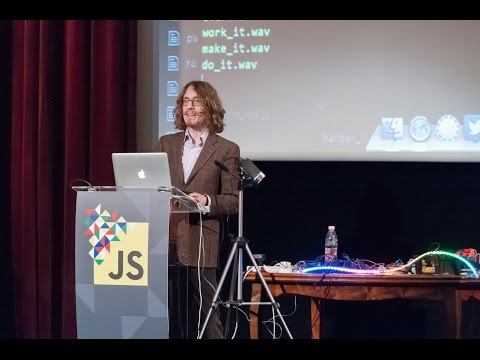
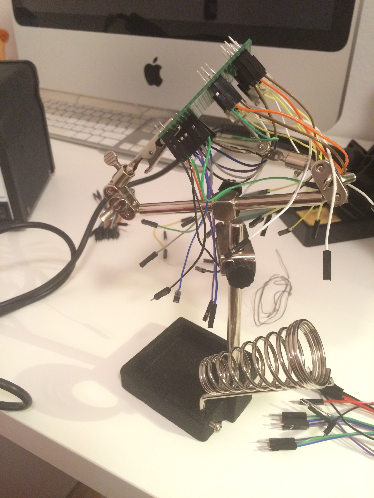
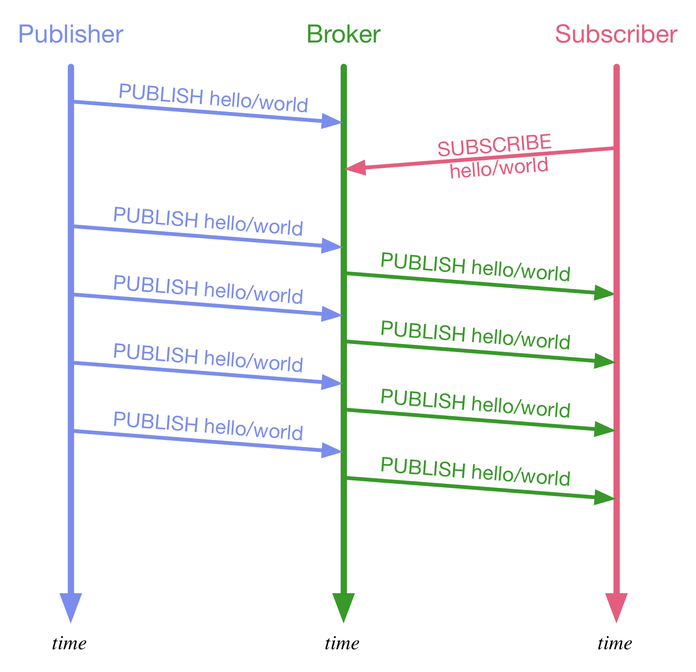
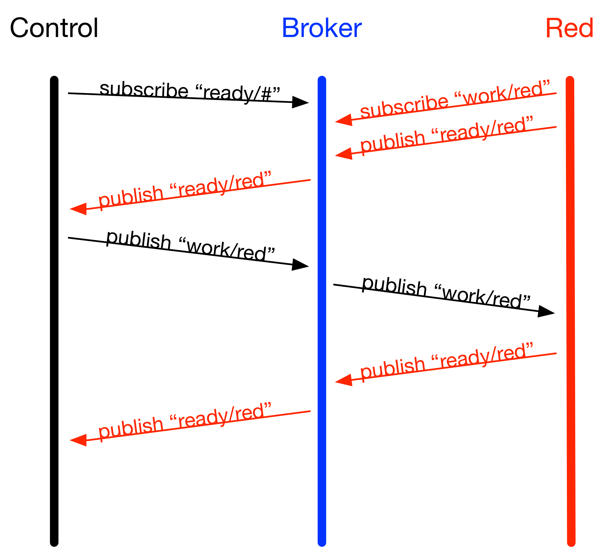

NodeBots
at Scale
by @matteocollina
NodeBots
Credits http://github.com/nodebots

Credits http://github.com/nodebots
JS robotics modules
- johnny-five
- serial-port
- ... and many more!
 Photo by Snootlab Photo by Windell Oskay
Photo by Snootlab Photo by Windell OskayArduino + USB cable + Laptop = NodeBot
Credits http://github.com/nodebots
Prototypes
"A prototype is an early sample, model, or release of a product built to test a concept or process or to act as a thing to be replicated or learned from." - from WikipediaAll snowflakes are unique
Each robot is its own snowflake

photo by Matthew Bergman
Julian Cheal @ JSConf Budapest
Cocktail Robot!
- Three pumps for three ingredients
- 12V relays for turning them on and off
- Brought to the network by a Raspberry Pi 2
The pumps
- Peristaltic pumps for aquariums
- powered by 12V
- on/off behavior
- no pulse wide modulation needed
Our goal for NodeConf.eu
- Serve 150 cocktails in 1 hour and a half
- 90 minutes for 150 cocktails
- 3 minutes for a cocktail
- 150 * 3 / 9 = 3.33
- Redundancy: 6 robots
The problem
- We decided to control 6 pumps from a Pi2
- Wi-Fi!
- Circuit Design?
Controlling circuit

Controlling circuit
- 6 pumps x 3 = 18 pumps
- 18 transistors
- 18 diodes
- 3 x prototyping boards
Too much soldering!
My 2-week vacation
The engineering solution
No diode

Sourcing parts
- 6 pumps x 3 + 1 = 19 pumps
- 20 transistors
- 5 x prototyping boards
- A bag of resistors
- LOADS of wires
Lots of soldering
..and burns
Architecture Requirements
- Control panel & status board
- Robot code on the Pi
- Robot code agnostic to the recepies
- Recepies on the panel's server
- Persistent job queue
- 3 days to write it!
Using a pub/sub broker
Publish-Subscribe

MQTT
- publish/subscribe protocol
- multiple quality of service level..
- ..with at-least-once and exactly-once semantics
- low overhead (2 bytes at minimum)
- offline messaging
- retained messages, like a key/value store
- can run over WebSocket


MQTT.js example
var client = mqtt.connect()
client.publish('msg', 'hello', (err) => {
console.log('sent!', err)
})
client.subscribe("msg/#")
client.on('message', (topic, payload) => {
console.log(topic, payload.toString())
})
Message Flow
Problem: The interface

Problem: The interface

Button controlling circuit

We were one TIP120 short

Solution we built one!
- the TIP120 is controlled by voltage that can drive high currents
- we had a NPN transistor controlled by voltage that can drive low currents
- we had a transistor controlled by low currents that can drive high currents
- remembering my analog electronics exam took 1 day
One last problem
Viscosity
In the process..
- We did a lot of testing..
- ..and tasting
- We fried 2 Raspberry Pi
- We popped 4 transistors
- ..and made one :)
- We wired 200+ wires
- We soldered five boards
- We live-deployed 10+ times while serving cocktails
photo by Matthew Bergman
photo by Matthew Bergman
Unsolved problems
- deploying code to the boards is hard
- WiFi is hard
- configuration is usually complex
Lesson Learned
- "do or do not, there is no try"
- being resourceful
- DO SOURCE YOUR PARTS CAREFULLY
- keep it simple
- building snowflakes is fun!
Open Source
- workaholic-ui - https://github.com/thekemkid/workaholic-ui
- robot - https://github.com/darragh-hayes/robot
- cocktail-control - http://github.com/mcollina/cocktail-control
The Team!
- Darragh Hayes
- Glen Keane
- Marco Piraccini
- Julian Cheal
- Matteo Collina